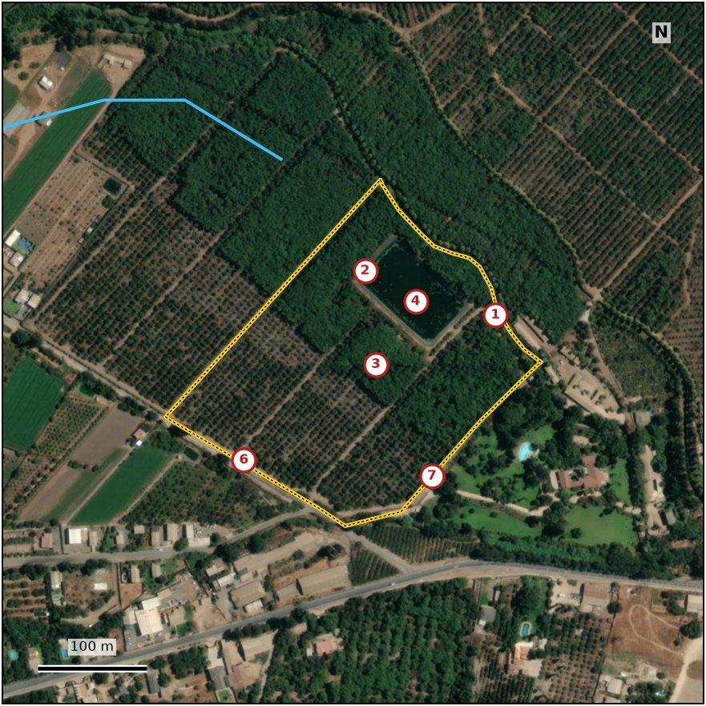
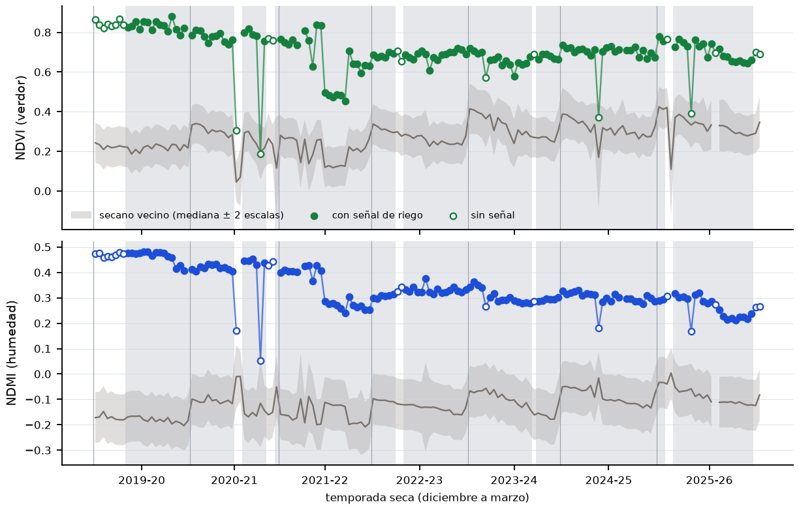
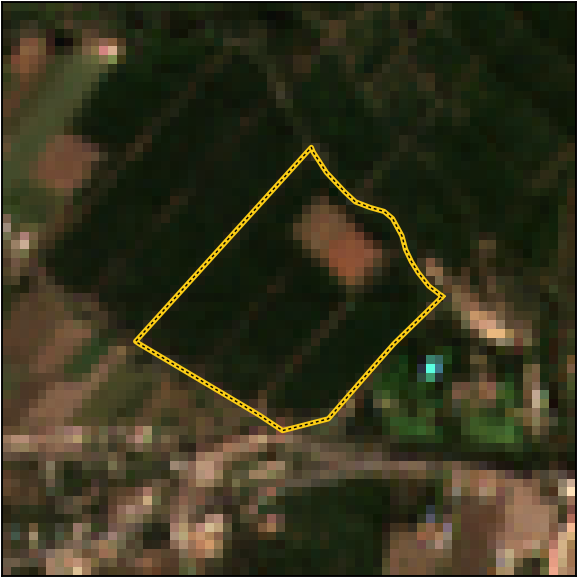
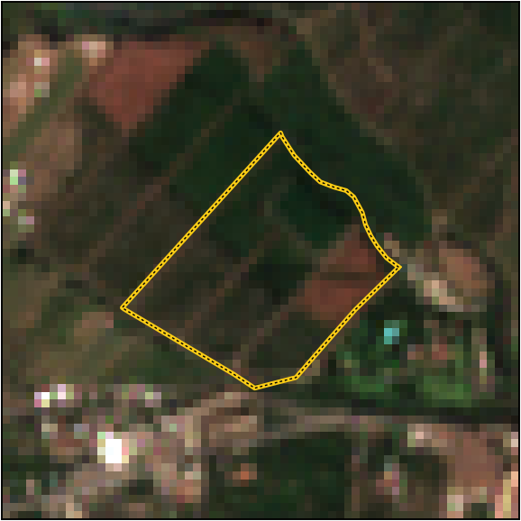

| Indicio principal | Riego en período seco: señal en 20 de 20 imágenes válidas (temporada 2025-26, 03-12-2025 a 18-03-2026) |
| Consumo estimado (FAO-56) | 17.000–33.000 m³ en dic–mar 2025-26 (29.000–64.000 m³/año) |
| Derechos inscritos encontrados | ninguno en el predio, su rol ni a 500 m |
| Fuentes de agua cercanas | canal La Sombra a 0 m; Rio Aconcagua a 1.166 m |
| Confianza del análisis | ALTA |
| Fiscalizaciones previas (DGA) | FO-0504-95 (inspección 23-11-2021: constata infracción, multa de 1.983,9 UTM) |
Lo que este documento no afirma: que exista una infracción, que el agua se haya extraído sin derecho ni el volumen exacto. La DGA decide si la denuncia es admisible y si corresponde fiscalizar.
| Región, provincia y comuna | Valparaíso, Quillota, Hijuelas |
|---|---|
| Sector | Por completar (no está en las fuentes usadas) |
| Predio | Rol 61-6 · 5,7 ha · polígono CIREN 5301413 Fuente: CIREN, Propiedades Rurales. |
| Coordenadas (centro del predio) | -32.82300, -71.01907 (WGS84) · UTM 19S E 310.995 N 6.366.530 |
| Cauce natural más cercano | Rio Aconcagua (río), a 1.166 m Fuente: DGA, red de drenajes. |
| Cauce artificial (canal) más cercano | La Sombra (comunidad de aguas del canal la sombra), a 0 m Fuente: CNR y CIREN, canales de riego 2020. |

Texto generado a partir de los datos del anexo técnico. Revíselo y modifíquelo con lo que usted sabe del lugar.
Entre el 03-12-2025 y el 18-03-2026 (temporada seca 2025-26), 20 de 20 imágenes satelitales Sentinel-2 válidas, tomadas en períodos de al menos 10 días sin lluvia, muestran el predio más verde y más húmedo que los terrenos de secano vecinos en la misma fecha (NDVI mediano 0,72, frente a 0,33 del secano). Sin lluvia, ese verdor es un indicio de riego.
La señal de riego se repite en 7 de las 7 temporadas secas analizadas (2019-20, 2020-21, 2021-22, 2022-23, 2023-24, 2024-25, 2025-26).
Según el Catastro Frutícola de CIREN (2025), el predio tiene 4,8 ha plantadas, principalmente de palto.
Con esa vegetación, el consumo de agua del cultivo se estima entre 17.000 y 33.000 m³ entre diciembre y marzo (del orden de 29.000 a 64.000 m³ al año), con el método FAO-56 simplificado. Es una estimación en rango, no una medición.
En el registro público de derechos de aprovechamiento de la DGA no se encontraron derechos con punto de captación en el predio, en su rol ni a menos de 500 m (vigentes al 01-12-2025).
El predio está a 0 m del canal La Sombra (comunidad de aguas del canal la sombra). Si el riego proviene de acciones de ese canal, no aparecería en el registro de derechos consultado; conviene verificarlo.
La DGA registra fiscalizaciones previas por extracción de aguas en este predio: FO-0504-95 (inspección 23-11-2021: constata infracción, multa de 1.983,9 UTM).
Por lo anterior, se solicita a la Dirección General de Aguas evaluar si en el predio existe una extracción de aguas sin derecho, eventual infracción al Código de Aguas.
La DGA declara admisible una denuncia cuando la presenta un interesado que expone cómo se configura el perjuicio o daño a la fuente, o la afectación a sus derechos o a los de terceros (Guía, sección 3.1). Caudal no redacta esta sección.
Declaro que los antecedentes expuestos son, a mi entender, verídicos, y solicito a la Dirección General de Aguas evaluar la eventual infracción descrita.
| # | Tipo | Descripción | Lat, lon | Confianza |
|---|---|---|---|---|
| 1 | Captación (expediente DGA) | captación del expediente FO-0504-95 (inspección DGA), a 0 m del predio | -32.82257, -71.01774 | 0,90 |
| 2 | Zona con verdor y humedad | NDVI y NDMI sobre el entorno (z=1.3) en 8 escenas del periodo seco | -32.82218, -71.01901 | 0,49 |
| 3 | Zona con verdor y humedad | NDVI y NDMI sobre el entorno (z=1.2) en 8 escenas del periodo seco | -32.82296, -71.01892 | 0,49 |
| 4 | Posible tranque | agua (NDWI) en 4 de 8 escenas | -32.82244, -71.01852 | 0,50 |
| 5 | Cauce natural | Río 'Rio Aconcagua' a 1166 m del predio: revisar si hay bocatoma o bombeo | -32.82278, -71.00485 | 0,30 |
| 6 | Canal | canal CIREN/CNR 'sin nombre' a 0 m del predio | -32.82373, -71.02024 | 0,40 |
| 7 | Canal | canal CIREN/CNR 'sin nombre' a 0 m del predio | -32.82390, -71.01840 | 0,40 |
Puntos de interés (M10): dónde mirar dentro y junto al predio en una visita; no son hallazgos.

| Temporada seca | Imágenes válidas | Con señal | z verdor | z humedad | NDVI | Confianza |
|---|---|---|---|---|---|---|
| 2019-20 | 15 | 15 (100 %) | 12,3 | 12,9 | 0,83 | alta |
| 2020-21 | 17 | 16 (94 %) | 9,5 | 10,7 | 0,78 | alta |
| 2021-22 | 22 | 22 (100 %) | 8,7 | 9,2 | 0,64 | alta |
| 2022-23 | 22 | 22 (100 %) | 8,1 | 9,0 | 0,69 | alta |
| 2023-24 | 21 | 21 (100 %) | 5,9 | 8,2 | 0,67 | alta |
| 2024-25 | 22 | 22 (100 %) | 7,3 | 7,9 | 0,71 | alta |
| 2025-26 | 20 | 20 (100 %) | 7,2 | 7,2 | 0,72 | alta |


| Temporada | Consumo dic–mar m³ | Consumo anual m³ | Derechos del rol m³/año | Derechos a 500 m m³/año | Derechos |
|---|---|---|---|---|---|
| 2019-20 | 30.000–39.000 (35.000) | 52.000–73.000 | 0 | 0 | ninguno a 500 m |
| 2020-21 | 22.000–37.000 (28.000) | 44.000–73.000 | 0 | 0 | ninguno a 500 m |
| 2021-22 | 22.000–32.000 (26.000) | 41.000–67.000 | 0 | 0 | ninguno a 500 m |
| 2022-23 | 20.000–34.000 (26.000) | 35.000–62.000 | 0 | 0 | ninguno a 500 m |
| 2023-24 | 16.000–33.000 (23.000) | 24.000–60.000 | 0 | 0 | ninguno a 500 m |
| 2024-25 | 18.000–34.000 (25.000) | 31.000–63.000 | 0 | 0 | ninguno a 500 m |
| 2025-26 | 17.000–33.000 (24.000) | 29.000–64.000 | 0 | 0 | ninguno a 500 m |
| Dato | Fuente | Archivo | Versión |
|---|---|---|---|
| Señal de riego (M3) | Sentinel-2 L2A y secano CONAF (D11) | senal_riego_elegibles_2025-26.parquet, senal_riego_validacion.parquet, senal_riego.parquet | 9192a7f 2026-11-21 |
| Anomalías (M2) | Sentinel-2 L2A y secano CONAF (D11) | anomalias_predio_elegibles_2025-26.parquet, anomalias_predio_validacion.parquet, anomalias_predio.parquet | 9192a7f 2026-11-21 |
| Consumo (M4) | Sentinel-2 y Open-Meteo | consumo_predio_elegibles_2025-26_temporada.parquet, consumo_predio_validacion_temporada.parquet, consumo_predio_temporada.parquet | 9192a7f 2026-11-21 |
| Derechos por predio (D5) | DGA, derechos registrados | predio_derecho.parquet | 9cbfc94 2026-11-21 |
| Cauce y canal cercanos (D8) | DGA red de drenajes; CNR y CIREN canales | predio_cauce.parquet | 74890e7 2026-11-21 |
| Puntos de interés (M10) | Caudal | poi.parquet | 78cd5ae 2026-11-21 |
| Frutales (D7) | CIREN Catastro Frutícola 2025 | predio_cultivo.parquet | 81b8944 2026-11-21 |
| Fiscalizaciones (D6) | DGA, planilla de fiscalización | fiscalizacion.parquet | a81aa6d 2026-11-21 |
| Ventanas secas (M1) | Open-Meteo y estaciones | ventana_seca.parquet | c239221 2026-11-21 |
| Cauces (D8) | DGA red de drenajes | cauce.parquet | 74890e7 2026-11-21 |
| Polígono del predio (D3) | CIREN Propiedades Rurales | predio.parquet | local sha256 19a009c094 |
Imágenes: Copernicus Sentinel-2 L2A (ESA), vía Earth Search (Element 84). Reflectancia = DN × 10⁻⁴ (D15).